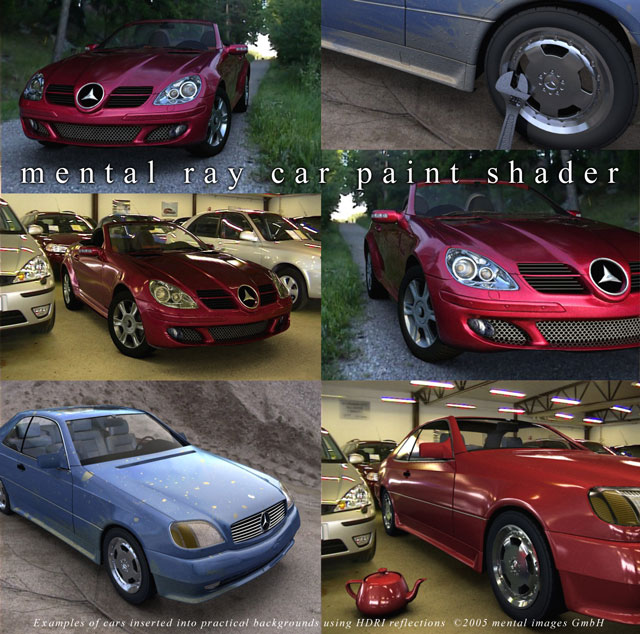
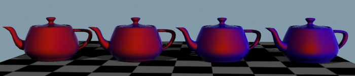
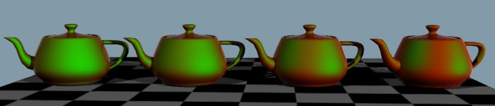
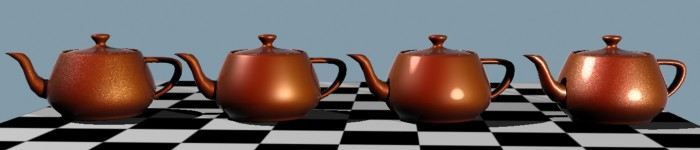
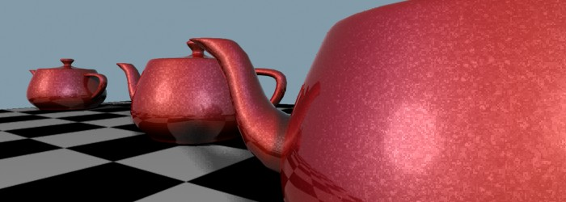
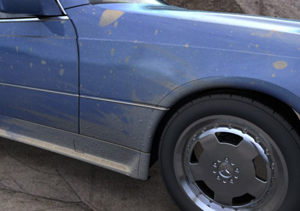

mental ray Paint Shaders
Version 3.8
Version 3.8.0.1
August 17 2009

Mental ray car paint shader
Contents
Paint Shaders
The paint related shaders comes from the paint library. The declaration
of the shaders and Phenomena can be found in the file paint.mi. To use
the shaders, the declaration file must be inluded and the library linked:
link "paint.so"
$include "paint.mi"
Car paint has several peculiar characteristics. On top of the
cars bodywork is a thin layer of pigment. The properties of
this layer is such that the actual perceived color shifts
depending on the viewing angle as well as the incident angle of
the incoming light.
Within this layer tiny metal flakes are suspended. The
flakes reflect light and can be seen glittering on a sunny day, due
to individual flakes reflecting sunlight directly at the observer.
On top of this is a clearcoat layer, which can be more or less
reflective and more or less glossy, depending on the quality of the
layer and any added wax coating. Most notably, this layer tends
to exhibit a pronounced Fresnel effect, reflecting more
light at glancing angles.
 Structure of car paint
Structure of car paint
Car paint Phenomenon
The mi_car_paint_phen should be applied as a surface
shader in a material. The shader supports:
- Diffuse reflection in the pigmentation layer, with selectable
color shift due to observer as well as incident light angle.
- Specular highlights from lightsources in the metallic flakes
- Optional ray traced reflections in the metallic flakes
- Specular highlights from lightsources in the clearcoat (with
optional "glazing" mode)
- Includes a clearcoat layer with selectable mirror or glossy reflections
and specular highlights with an optional "glazing" mode.
- Includes a lambertian dirt layer, for that "unwashed" look.
mi_car_paint_phen
declare phenomenon "mi_car_paint_phen"
(
color "ambient",
color "base_color",
color "edge_color",
scalar "edge_color_bias",
color "lit_color",
scalar "lit_color_bias",
scalar "diffuse_weight",
scalar "diffuse_bias",
color "flake_color",
scalar "flake_weight",
scalar "flake_reflect",
scalar "flake_exp",
scalar "flake_density",
scalar "flake_decay",
scalar "flake_strength",
scalar "flake_scale",
color "spec",
scalar "spec_weight",
scalar "spec_exp",
color "spec_sec",
scalar "spec_sec_weight",
scalar "spec_sec_exp",
boolean "spec_glazing",
color "reflection_color",
scalar "edge_factor",
scalar "reflection_edge_weight",
scalar "reflection_base_weight",
integer "samples",
scalar "glossy_spread",
scalar "max_distance",
boolean "single_env_sample",
color "dirt_color",
scalar "dirt_weight",
scalar "irradiance_weight",
scalar "global_weight",
integer "mode",
array light "lights"
)
Diffuse Parameters
- ambient
- is the ambient light component. Note that this parameter
is treated differently to the ambient/ambience parameter pair of many
other base shaders in that it is influenced by the other diffuse color
parameters following, and hence represents incoming light, rather than
the objects "ambient color".
- base_color
- is the base diffuse color of the material.
- edge_color
- is the color seen at glancing angles (i.e. edges) which
tend to appear much darker. For really deep metallic paints seen on
sports cars it tends to be almost black.
- edge_color_bias
- defines the falloff rate of the color towards the
edge. The useful range is 0.0 to approximately 10.0, where the value 0.0 turns
the effect off. Higher values makes the edge region narrower, lower values makes
it wider.

Color shift due to view angle, shifting between a red base_color
and a blue edge_color
(atypical colors chosen for demonstration purposes only) with varying edge_bias
- lit_color
- is the color seen in the area facing the lightsource.
- lit_color_bias
- defines the falloff rate of the color towards the
light. The useful range is 0.0 to approximately 10.0, where the value 0.0 turns
the effect off. Higher values makes the colored region facing the light
smaller/narrower, lower values makes it larger/wider.

Color shift due to view angle, shifting between a red base_color
and a green lit_color
(atypical colors chosen for demonstration purposes only) with varying lit_bias
- diffuse_weight
- controls the overall level of the diffuse parameters.
- diffuse_bias
- modifies the falloff of the diffuse shading. The
useful range is approximately 0.5 to 2.0, where 1.0 represent standard
lambertian shading, higher values pushes the diffuse peak towards the light
source, and lower values flattens the diffuse peak.
- irradiance_weight
- sets the influence of indirect light (photons
and final gathering) on the surface. It is internally divided by PI, i.e.
a value of 1.0 means the standard 1.0/PI weight.
Specular Parameters
- spec
- is the color of the primary specular highlight.
- spec_weight
- is a scalar multiplier.
- spec_exp
- is the Phong exponent.
- spec_sec
- is the color of the secondary specular highlight.
- spec_sec_weight
- is a scalar multiplier.
- spec_sec_exp
- is the Phong exponent.
- spec_glazing
- enables a special mode on the primary
specular highlight called glazing. By threasholding the specular
highlight, it makes the surface appear more polished and shiny. For nice
sportscars with a lot of wax, turn glazing on. For beat up cars in the
junkyard, turn it off.

Left to right: Flake specularity only, standard specularity,
"glazing" mode enabled, and finally; "glazing" mode specularity with flakes
Flake Parameters
- flake_color
- is the color (reflectivity) of the flakes, which is
generally white.
- flake_weight
- is a scalar multiplier for the above color.
- flake_reflect
- defines the amount of ray traced reflection in the
flakes, which allows glittery reflections of e.g. an HDRI environment.
The value of 0.0 turns the effect off. The effect should generally be very
subtle and a value of 0.1 is often enough. The final intensity of
reflections also depends on flake_color and
flake_weight.
- flake_exp
- is the Phong specular exponent for the flakes.
- flake_density
- sets the density of the flakes. The useful range
is from 0.1 to approximately 10.0, where lower values indicate less dense
flakes and higher values indicates denser flakes.
- Since flakes are inherently small, they can easily introduce rendering
artifacts if their visual density becomes significantly smaller than a
pixel. If the oversampling of the rendering is set high, small flakes may
also potentially trigger massive oversampling and hence very long render
times needlessly, since the averaging caused by the oversampling will
essentially cancel out the flake effect. To avoid this the parameter
flake_decay exists.
- flake_decay
- sets a distance at which the influence of flakes
fade out. A value of 0.0 disables fading. Any positive value causes the
flake_weight to be modulated such that is reaches zero at this
distance.

Flakes at different distances with no flake decay. The furthest flakes
may potentially cause flicker in animations,
or trigger unnecessary oversampling and long render times (here rendered
with low oversampling for illustrative purposes).
Using flake decay. The flake strength diminishes by distance. The same
intentionally low oversampling as in the previous image has been used.
- flake_strength
- sets the difference between the orientation of the
flakes. The useful range is 0.0 to 1.0 where 0.0 means that all flakes are
parallel to the surface and higher values means the orientation of flakes
are more and more varied.
- flake_scale
- is the size of the flakes. The procedural texture
is calculated in object space, and will hence follow the object. Keep
in mind that the scale is therefore influenced by any scale transformation
on the object instance.
Reflection Parameters
- reflection_color
- sets the color of the reflections in the
clearcoat layer, generally white.
Clearcoat tends to reflect more at glancing angles (edges).
- edge_factor
- defines the "narrowness" of this edge.
- reflection_edge_weight
- controls the reflective strength at the
edge (generally 1.0).
- reflection_base_weight
- defines the reflective strength at
facing angles (generally low, 0.1 - 0.3).
Optionally, clearcoat layers may be glossy.
samples parameter sets the bumber of glossy reflection rays traced.
The value of 0 disables glossiness.
- glossy_spread
- sets the amount of glossiness. Cars are generally
near-mirrors so this value should be kept small.
The glossy reflections are created with the help of the shader
mib_glossy_reflection.
Therefore, the parameters max_distance (limiting the reach of
reflective rays) and single_env_sample (optimizing lookup of
environment maps) are exposed parameters of that shader.
Only a subset of the parameters are exposed. If more are required,
one can either build a custom shading graph or create ones own
variation of the mi_car_paint_phen Phenomenon.
Dirt Parameters

Real cars are rarely clean. Here showing the dirt layer (hand
painted dirt placement map), including a bump map applied in the dirty regions.
A simple lambertian dirt layer covers the underlaying paint and clearcoat
layers.
- dirt_color
- is the color of said dirt.
- dirt_weight
- the amount of dirt, which would probably be connected
to a texture shader to get variations in the dirt across the surface. If
dirt_weight is 0.0 no dirt is added.
Advanced Parameters
- irradiance_weight
- sets the influence of indirect light (photons
and final gathering) on the surface. It is internally divided by PI, i.e.
a value of 1.0 means the standard 1.0/PI weight.
- global_weight
- is a global tuning parameter affecting the entire
diffuse, flake and specular subsystems. It does not affect reflections
or dirt.
- mode
- is the light mode.
- lights
- the light list.
The mi_metallic_paint is shader is used to facilitate the
rendering of metallic paint.
However, it only takes care of the pigmentation and the flakes, not
the very important clearcoat reflections.
To accomplish the full effect, it needs to be combined with a reflection
shader (i.e. connecting it to the base_material parameter of
mib_glossy_reflection).
It also needs a bump shader for the flakes (generally
mi_bump_flakes).
To get all these connections made automatically one can use the ready-made
Phenomenon mi_car_paint_phen,
which also supports a dirt layer. See the above documentation, which has
slightly more detailed documentation of the parameters with example images.
The shader supports:
- Diffuse reflection in the pigmentation layer, with selectable
color shift due to observer as well as incident light angle.
- Specular highlights from lightsources in the metallic flakes
- Specular highlights from lightsources in the clearcoat (with
optional "glazing" mode)
- Optional ray traced reflections in the metallic flakes
declare shader
color "mi_metallic_paint" (
color "ambient" default 0 0 0 1,
color "base_color" default 0.8 0.1 0.0 1,
color "edge_color" default 0.0 0.0 0.0,
scalar "edge_color_bias" default 1.0,
color "lit_color" default 0.6 0.0 0.2,
scalar "lit_color_bias" default 8.0,
scalar "diffuse_weight" default 1.0,
scalar "diffuse_bias" default 1.5,
scalar "irradiance_weight" default 1.0,
color "spec" default 1 1 1 1,
scalar "spec_weight" default 0.2,
scalar "spec_exp" default 60.0,
color "spec_sec" default 1 1 1 1,
scalar "spec_sec_weight" default 0.3,
scalar "spec_sec_exp" default 25.0,
boolean "spec_glazing" default on,
color "flake_color" default 1.0 1.0 1.0 1,
scalar "flake_weight" default 1.0,
scalar "flake_reflect" default 0.0,
scalar "flake_exp" default 45.0,
scalar "flake_decay" default 0.0,
shader "flake_bump",
scalar "global_weight" default 1.0,
integer "mode" default 3,
array light "lights"
)
version 2
apply material
end declare
- ambient
- is the ambient light component. Note that this parameter
is treated differently to the ambient/ambience parameter pair of many
other base shaders in that it is influenced by the other diffuse color
parameters following, and hence represents incoming light, rather than
the objects "ambient color".
- base_color
- is the base diffuse color of the material.
- edge_color
- is the color seen at glancing angles (i.e. edges) which
tend to appear much darker. For really deep metallic paints seen on
sports cars it tends to be almost black.
- edge_color_bias
- defines the falloff rate of the color towards the
edge. The useful range is 0.0 to approximately 10.0, where the value 0.0 turns
the effect off. Higher values makes the edge region narrower, lower values makes
it wider.
- lit_color
- is the color seen in the area facing the lightsource.
- lit_color_bias
- defines the falloff rate of the color towards the
light. The useful range is 0.0 to approximately 10.0, where the value 0.0 turns
the effect off. Higher values makes the colored region facing the light
smaller/narrower, lower values makes it larger/wider.
- diffuse_weight
- allows to tune the overall level of the diffuse
parameters.
- diffuse_bias
- modifies the falloff of the diffuse shading. The
useful range is approximately 0.5 to 2.0, where 1.0 represent standard
lambertian shading, higher values pushes the diffuse peak towards the light
source, and lower values flattens the diffuse peak.
- irradiance_weight
- sets the influence of indirect light (photons
and final gathering) on the surface. It is internally divided by PI, i.e.
a value of 1.0 means the standard 1.0/PI weight.
- spec
- is the color of the primary specular highlight.
- spec_weight
- is a scalar multiplier.
- spec_exp
- is the Phong exponent.
- spec_sec
- is the color of the secondary specular highlight.
- spec_sec_weight
- is a scalar multiplier.
- spec_sec_exp
- is the Phong exponent.
- spec_glazing
- enables a special mode on the primary specular
highlight called glazing. By threasholding the specular
highlight, it makes the surface appear more polished and shiny. For nice
sportscars with a lot of wax, turn glazing on. For beat up cars in the
junkyard, turn it off.
- flake_color
- is the color (reflectivity) of the flakes, which is
generally white.
- flake_weight
- is a scalar multiplier for the above color.
- flake_reflect
- defines the amount of ray traced reflection in the
flakes, which allows glittery reflections of e.g. an HDRI environment.
The value of 0.0 turns the effect off. The effect should generally be very
subtle and a value of 0.1 is often enough. The final intensity of
reflections also depends on flake_color and
flake_weight.
- flake_exp
- is the Phong specular exponent for the flakes.
- flake_bump
- is the actual flake bump shader used. The shader
mi_bump_flakes exists
for this purpose, but any shader that modifies the normal vector (e.g.
mib_passthrough_bump_map)
can be used.
- The shader put in the flake_bump may also return a color, which
will be the color (intensity) of the flake, or it may leave the color
unmodified.
Since flakes are inherently small, they can easily introduce rendering
artifacts if their visual density becomes significantly smaller than a
pixel. To avoid this the parameter flake_decay exists. It sets
a distance at which the influence of flakes fade out. A value of 0.0
disables fading. Any positive value causes the flake_weight to
be modulated such that it reaches zero at this distance.
- global_weight
- is a global tuning parameter that is a global
multiplier to the output of the shader.
- mode
- is the light mode.
- lights
- the light list.
Flake Bump Shader
This shader is designed to create a bump map with the appearance
of small individual flakes at slightly different orientations. It does
so by slightly modifying the current normal vector based on a procedurally
generated flake texture.
It also returns a color that indicates the "intensity" for that flake.
mi_bump_flakes
declare shader "mi_bump_flakes" (
scalar "flake_density" default 0.5,
scalar "flake_strength" default 0.8,
scalar "flake_scale" default 0.2,
)
version 1
apply texture
end declare
- flake_density
- only affects the returned color, not the
amount of change to the normal vector. The useful range is from
0.1 to approximately 10.0, where lower values indicate less dense
flakes (more flakes are given low color values near black) and
higher values indicates denser flakes.
- flake_strength
- indicates the amount of normal vector
perturbations. Useful range is 0.0 (which disables the effect) to
1.0. For low values, flakes are nearly parallell, for higher values,
the difference between each flakes orientation is larger.
- flake_scale
- is the size of the flakes. The procedural texture
is calculated in object space, and will hence follow the object. Keep
in mind that the scale is therefore influenced by any scale transformation
on the object instance.
Copyright (©) 1986-2009 by
mental images GmbH
{kind=link}